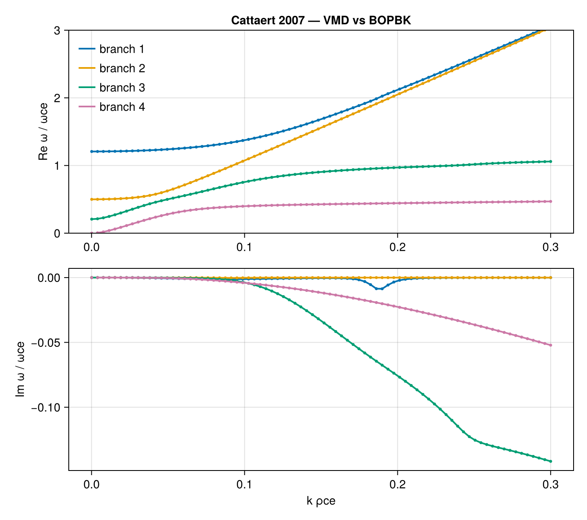
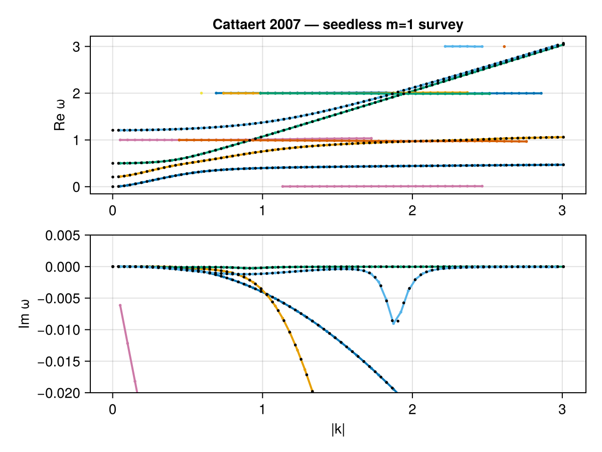

Kappa-Maxwellian Plasma — Cattaert 2007
A single electron population with strongly non-Maxwellian along the field (κ∥ = 1) and nearly Maxwellian across it (κ⟂ = 200), oblique at θ = 30°. We first track four known electromagnetic branches from a single seed, then the seedless global solver rediscovers them all at once. Verified against PlasmaBO.jl rlp_Cattaert07 case.
using VlasovMaxwellDispersion
using DelimitedFiles, Printf
using CairoMakiePlasma setup
SI parameters from the reference, normalized to the electron gyrofrequency ωce. Π² = ωpe²/ωce²; velocities are in units of c, so vth = 0.1 c.
const c0 = 2.99792458e8
qe = 1.602176634e-19; me_ = 9.1093837015e-31; eps0 = 8.8541878128e-12
B0 = 1.0e-6; θ = deg2rad(30); n = 2.43e6; T = 2555.0
wce = qe * B0 / me_
Pi2 = n * qe^2 / (eps0 * me_) / wce^2
vth = sqrt(2 * qe * T / me_) / c0
vdf = ProductBiKappa(vth_para = vth, vth_perp = vth, kappa_para = 1, kappa_perp = 200.0)
plasma = (NormalizedSpecies(-1.0, Pi2, vdf),)(NormalizedSpecies{Float64, Separable{Kappa{Float64, Int64}, Kappa{Float64, Int64}}}(-1.0, 0.25000375938089453, Separable{Kappa{Float64, Int64}, Kappa{Float64, Int64}}(Kappa{Float64, Int64}(1.9900040890644357, 200), Kappa{Float64, Int64}(0.005000010274031246, 1))),)Reference roots and wavevectors
The tabulated BOPBK roots (cattaert07_ref.tsv) use reference kρ = k·vtp/ωce; we invert this to VMD's k (normalized to ωce/c) at the fixed propagation angle.
vtp = sqrt(1 - 1 / 200) * vth
ref = readdlm(joinpath(@__DIR__, "cattaert07_ref.tsv"); comments = true)
kρs = unique(ref[:, 1])
ks = [Wavenumber(kρ / vtp * sin(θ), kρ / vtp * cos(θ)) for kρ in kρs]
i0 = argmin(abs.(kρs .- 0.1)) # seed from kρ ≈ 0.127Seeded tracking of the four branches
Each branch is followed bidirectionally from its kρ ≈ 0.1 seed, then compared point-by-point against the BOPBK reference. Near k → 0 the branches curve steeply, so tracking runs on a 2×-subdivided kρ grid and compares at the reference points. Branch 4's kρ = 10⁻⁴ endpoint is excluded: there its ω ≈ −3×10⁻⁶ has merged into the ω = 0 light-term pole of det 𝒟 (the reference value is itself numerically zero) — below that separation no root tracker can hold a branch identity.
kρd = sort!(unique(vcat([collect(range(kρs[i], kρs[i + 1]; length = 3)) for i in 1:(length(kρs) - 1)]...)))
iref = [findfirst(==(kρ), kρd) for kρ in kρs]
ksd = [Wavenumber(kρ / vtp * sin(θ), kρ / vtp * cos(θ)) for kρ in kρd]
j0 = iref[i0]
ttrack = @elapsed ωs = map(1:4) do ib
rows = ref[ref[:, 2] .== ib, :]
seed = complex(rows[i0, 3], rows[i0, 4])
fwd = solve(DispersionProblem(plasma, seed, ksd[j0:end]))
bwd = solve(DispersionProblem(plasma, seed, reverse(ksd[1:j0])))
ω = vcat(reverse(bwd.omega), fwd.omega[2:end])[iref]
ib == 4 && (ω[1] = complex(NaN, NaN)) # pole-merged endpoint (see above)
ωref = complex.(rows[:, 3], rows[:, 4])
cmp = ib == 4 ? (2:length(ω)) : eachindex(ω)
dre = abs.(real.(ω[cmp]) .- real.(ωref[cmp]))
dim = abs.(imag.(ω[cmp]) .- imag.(ωref[cmp]))
@printf(
"branch %d: seed=%.5f%+.2eim maxΔRe=%.2e maxΔIm=%.2e nfinite=%d/%d\n",
ib, real(seed), imag(seed), maximum(dre), maximum(dim), count(isfinite, ω), length(ω)
)
ω
end
@printf("seeded tracking: %.1f s for 4 branches × %d k-points\n", ttrack, length(kρd))branch 1: seed=1.36930-1.14e-03im maxΔRe=2.63e-05 maxΔIm=5.24e-05 nfinite=80/80
branch 2: seed=1.06303-2.07e-04im maxΔRe=8.46e-07 maxΔIm=1.19e-07 nfinite=80/80
branch 3: seed=0.75061-3.52e-03im maxΔRe=1.23e-07 maxΔIm=1.17e-07 nfinite=80/80
┌ Warning: Stopping with estimated error 1.932e-10 after 23 iterations
└ @ RationalFunctionApproximation ~/.julia/packages/RationalFunctionApproximation/mkt75/src/barycentric.jl:501
branch 4: seed=0.39770-3.95e-03im maxΔRe=2.55e-06 maxΔIm=8.45e-07 nfinite=79/80
seeded tracking: 3.3 s for 4 branches × 159 k-pointsVMD reproduces the reference roots, including the weak damping.
Solid lines: VMD tracks. Open markers: BOPBK reference.
fig = Figure(size = (700, 620))
axr = Axis(fig[1, 1]; ylabel = "Re ω / ωce", title = "Cattaert 2007 — VMD vs BOPBK")
axi = Axis(fig[2, 1]; xlabel = "k ρce", ylabel = "Im ω / ωce")
palette = Makie.wong_colors()
for ib in 1:4
rows = ref[ref[:, 2] .== ib, :]
col = palette[ib]
lines!(axr, kρs, real.(ωs[ib]); color = col, linewidth = 2, label = "branch $ib")
lines!(axi, kρs, imag.(ωs[ib]); color = col, linewidth = 2)
scatter!(axr, rows[:, 1], rows[:, 3]; color = col, markersize = 5, marker = :circle)
scatter!(axi, rows[:, 1], rows[:, 4]; color = col, markersize = 5, marker = :circle)
end
ylims!(axr, 0, 3)
axislegend(axr; position = :lt, framevisible = false)
fig
Seedless survey
The same branches, discovered without initial points: a GlobalDispersionProblem over an ω box and a kρ scan finds all roots of det 𝒟 = 0 at once. region is the ω search box (in units of ωce); geom sweeps k at fixed θ, spanning kρ ∈ [0.005, 0.3].
region = (0.005 - 0.16im, 3.05 + 0.02im)
geom = AngleSweep(k = (0.05 / vtp * 0.1, 0.3 / vtp), theta = θ)
prob = GlobalDispersionProblem(plasma, region, geom)
sol = solve(prob)SurveySolution(retcode=:Success, 13 roots, 26424 evals, 1.17 s)dispersion_diagram plots the surveyed branches: Re ω(kρ) and Im ω(kρ), one colour per discovered branch. The four tabulated branches appear as continuous curves spanning the sweep; the extra flat branches near ω ≈ ωce, 2ωce are genuine but heavily damped kinetic roots (Im ω ≲ −0.03) Black dots overlay the BOPBK reference to confirm the discovered branches sit on the tabulated roots; the diagram's x-axis is |k| in units of ωce/c, so the reference kρ maps to kρ/vtp.
figs = dispersion_diagram(sol; title = "Cattaert 2007 — seedless m=1 survey")
axr2, axi2 = contents(figs[1, 1])[1], contents(figs[2, 1])[1]
scatter!(axr2, ref[:, 1] ./ vtp, ref[:, 3]; color = :black, markersize = 4)
scatter!(axi2, ref[:, 1] ./ vtp, ref[:, 4]; color = :black, markersize = 4)
ylims!(axi2, -0.02, 0.005)
figs
This page was generated using Literate.jl.